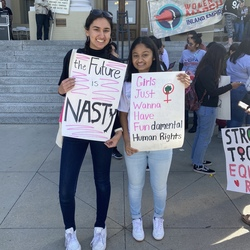
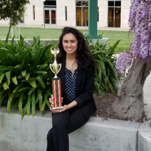
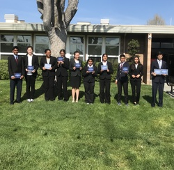
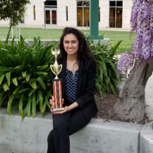
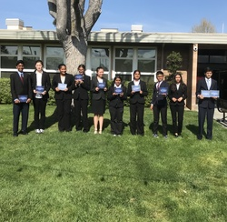

Sana Jaffery
Hi! I'm Sana Jaffery, a first-year Public Policy major at UC Riverside's School of Public Policy. I consider myself a student, educator and community leader.
In the past few years, I've worked hard to make my community a better place. In high school, I joined the debate team. There, I learned all about argumentation and public speaking. More importantly, I became an ardent reader of policy literature focused on the effects of discrimination. This led me to explore bigger issues and fight for social justice. Looking to do more, I joined the Santa Clara County Girl's Advisory Team. Working alongside my county’s Office of Women’s Policy, I was able to see the ways my local government approached issues up close. We put together different drives and workshops addressing sexual violence, income inequality, and other women’s issues. It was through this program, I knew I belonged in public policy.
Debate was a major part of my academic and social life. Through debate, I learned how to passionately express my arguments and fight for what I believe in. Being entranced by this world of communication and expression, I sought to teach others what I found to be a truly amazing skill. I went on to re-start and expand the Speech and Debate Program at Rancho Milpitas Middle School and later begin teaching at the Golden State Academy. As an educator, I learned about the profound impact teachers can have. My work at The Golden State Academy taught me the importance of communication, organization and collaboration. Working with students required constantly developing and improving the curriculum and adapting to each and every student’s needs. This also meant addressing parent concerns and collaborating with other coaches in order to ensure each student was making significant progress.
Beyond working with students, I enjoy being active in my community through advocacy. With the recent rise of nationalism and other issues plaguing our society, 2020 is an incredibly important year politically. Being able to vote in the national election for the first time, I find myself truly excited to participate in a movement to change America for the better. I've even started campaigning for Elizabeth Warren. Through her campaign, I've gone knocking on doors and calling voters. I've always found this kind of political interaction very important, especially since so many politicans are disconnected from the American electorate they should be representing.
As a Public Policy student at UCR, I hope to learn more about policy making and analysis in order to work on creating positive policy change in the future.
Experience
Off-Site Research Assistant & Coach
• Off-site coordination, coaching, and research compilation for Milpitas Debate.
• Involved working closely with students to improve their argumentation and public speaking skills.
Off-Site Research Assistant & Assistant Coach
• Off-site coaching, and research compilation for The Golden State Academy.
• Involved grading and editing student work in order for them to improve.
Girls Advisory Team Member
• Recieved valuable leadership training from the Santa Clara Office of Women’s Policy, including networking opportunities and workshops provided by county departments, community-based organizations, and the business sector.
• Put together the "Strong Girls Strong Women" confrence, hosting hundreds of guests.
Education
UC Riverside
Portfolio




 